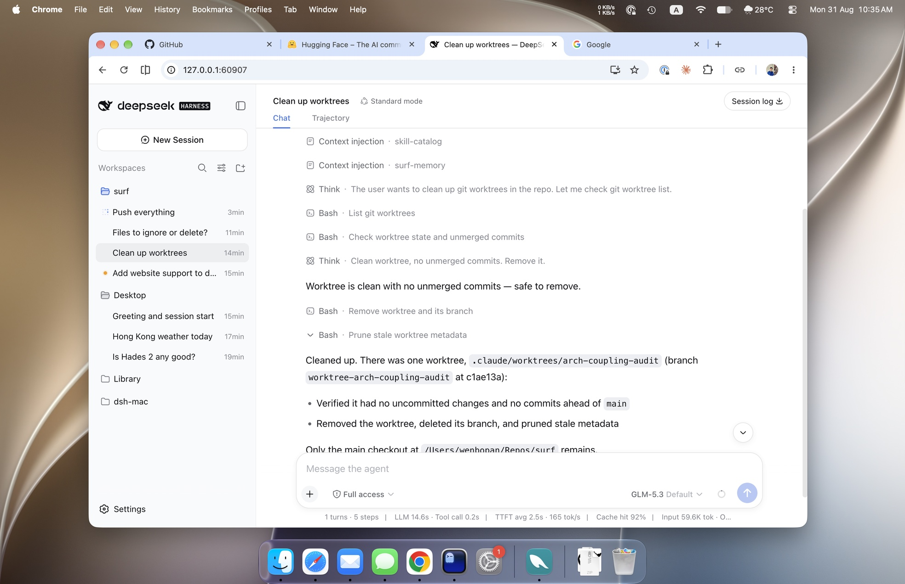
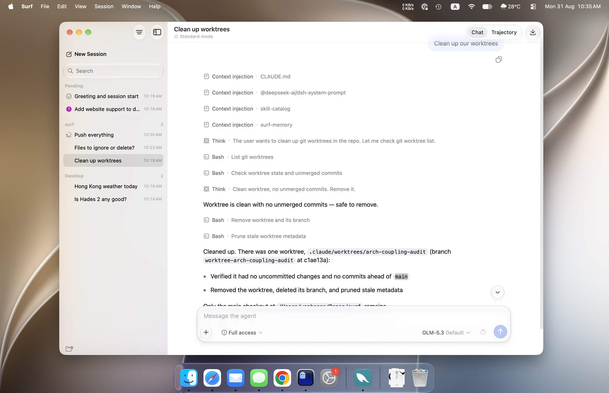

Surf gives dsh a real Mac window: a native session list, system notifications, a settings window, and full keyboard shortcuts. The frame around the conversation is Swift, and it can be rebuilt while the app is running.
Version 0.1.0 · macOS 27


DeepSeek Harness in a browser tab. The same session, in a window of its own.
Swift, swapped in place
Each name is the Swift module a package compiles to: surf-sidebar becomes SurfSidebar.
Popovers, button groups, and the composer card are drawn with the system’s own materials, and type is pulled back to macOS metrics.
The system rendering is released when the window loses focus, and a hand-built approximation takes its place.
A plugin’s Swift directory compiles to a module named by its content hash, which then replaces the previous generation in place.
// One C entry point. That is the whole ABI. @_cdecl("surf_plugin_entry") public func surf_plugin_entry() -> UnsafeMutableRawPointer { Unmanaged.passRetained(SidebarPlugin()).toOpaque() } final class SidebarPlugin: SurfPlugin { func activate(host: SurfHost) -> AnyObject? { let handle = SurfPluginHandle() host.register(slot: "sidebar") { AnyView(SidebarView()) }.kept(by: handle) return handle // host lets go = this generation retires } }
0.45 s for a six-line view, 1.03 s for the 408-line session list. If a build fails, the last good generation stays on screen, and the error’s file and line go to the terminal.
Dragging, double-click reset, width autosave, the collapse animation, and the toolbar separator all arrive with it.
With no plugin in root, the window falls back to a plain full-size web view, and dsh works as usual.
Switch to By Status and the list splits into Pending, In Progress and Ended. In the other groupings the same state shows as the symbol at the start of each row.
Rows are 32 points, titles 13 point regular, the status slot 20, all measured from Apple’s own sidebar specimens.
Approval requests and questions arrive as notifications with buttons on them, and are withdrawn if answered somewhere else first.
Run the notarisation script?
Notarisation script · surf
No notification appears for the session you are looking at. Other sessions get a banner, with a sound only when one is waiting on you. Finished turns stay quiet while the app is in front.
Plugins declare their commands and Surf assembles them into the menu bar and a shortcut editor in Settings.
The session commands can be re-bound or switched off. The window and app shortcuts are fixed.
Five panes of AppKit that load no web content. Changes apply as you make them, the way Mac settings do.
The first four panes mirror dsh’s own settings pane for pane. The plugin list is read-only, because dsh does not provide a way to toggle plugins.
A folder of markdown files: the index goes into context on every step, pinned ones go in whole, and a body is read only when it is needed.
One caveat: a prompt injection that reaches the write path persists across sessions.
Install dsh, drag Surf to your Applications folder, and open it. Surf starts the backend on launch and stops it when you quit. No Xcode, no configuration.
The shell, the eight plugins, and the measurements behind the numbers on this page. Gaps in dsh are documented rather than worked around.
One C entry point, one swift/ folder, and a few lines of JavaScript. The SDK ships inside the app, so you do not need Xcode.
Worktree is clean with no unmerged commits — safe to remove.
Cleaned up. There was one worktree, worktrees/arch-coupling-audit, on branch worktree-arch-coupling-audit: